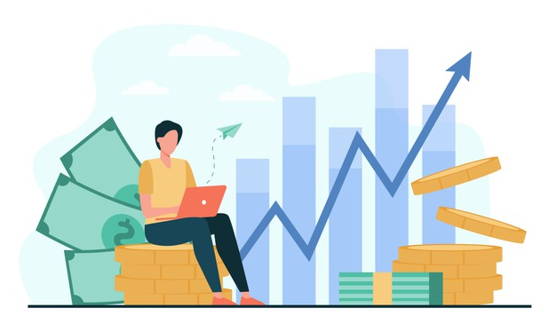

Importance Of Saving & Investing From An Early Age
Dec, 2020 | 7 comments
Savings: Savings is a process of keeping aside a part of one’s hard earned money to satisfy future needs; be it buying a luxury car, buying a big house, investing in any kind of assets, retirement purposes or anything at all. When we are young, we fail to understand the true value of money. We keep wondering about how our friends could spend so much on buying new clothes and expensive toys, it is only after spending extravagantly for almost one or two decades on this planet we start understanding the real value of money and significance of savings. The trigger to save is often late and only a form of regret in the lives of most people. But by then, the sand has already slipped from one’s hands.
Importance of savings: Education: Education is the basic and most important necessity of every individual. The rising costs of public and private education is no more a hidden story. Layoffs: Companies like Cognizant, TCS, GM, Wipro, Infosys and many more are apparently planning to cut jobs the in near future. Retirement: At younger stages of our lives we really do not understand the importance of savings for life after retirement. But think once you will need funds/income/investments to support your financial status. Emergency health care: If we need an urgent check-up or treatment for any health-related problem and we do not possess any kind savings this may force us to take loans, or end up compromising with our health issues. Contingency fund: This must cover any unforeseen expenditure: A sudden material loss, an urgent renovation, an accident or anything. This must make sure that you do not get into any serious debts desperately. Though very basic and simple in nature, it is helpful to understand how we can save money. Saving money for youngsters is much easier as compared to older population and the major reason for this is no big debts/obligations. There are two things that we should think of while planning to save: Can we reduce or eliminate any variable expenses? Can we shift the money flow towards savings, which previously was applied towards unnecessary expenses?
Saving tips: Savings Account: Savings account is the most common technique for most of the youngsters to save a part of income. A savings account keeps money safely and provides convenient access to it. There are various types of savings bank accounts in India to meet everyone’s need. Do not carry a lot of cash: We spend on unnecessary things impulsively when we carry extra cash with us. Assess Spending: Try to estimate and restrict to an amount of money you spend in a period (week, month, and year) by simply comparing it to the past and trying to improve. Smart savings: These savings make a small difference but the fact is it does. In fact, coupons play a small yet important role in reducing day to day expenses. With the advent of several coupons and discount sites, this process has become easier and more efficient.